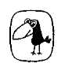

MİNİMAMORALİA, Adorno’nun başyapıtıdır. İlgilendiği bütün alanları bu kitapta-bazen birkaç sayfalık tek bir fragman içinde- bir araya getirmiştir: Felsefe, günlük yaşam, siyaset ve işçi hareketinin tarihi, edebiyat ve müzik, psikoloji, Faşizm, ırkçılık ve savaş. Bir polemik kitabı olarak da görülebilir: Bütün bu konuları, karşılarında eleştirel bir tutum aldığı düşünce sistemleriyle (örneğin varoluşçuluk veya psikanaliz) ve Heidegger gibi düşünürlerle kimi zaman açık kimi zaman örtük bir tartışma içinde işlemektedir. Adorno’nun kendine özgü yöntemi de bu kitapta en güçlü ifadesini bulur: İlk bakışta önemsiz görünebilen tek bir olay ya da nesne (örneğin astroloji) Adorno’nun merceği altında, büyük tarihsel eğilimleri açıklayan bir şifre olarak belirmektedir. Sunuş yazısında kendisi şöyle diyor: “Kitabın her üç bölümünde de çıkış noktası, en dar haliyle özel alandır... Buradan toplumsal ve antropolojik boyutları daha belirgin olan düşüncelere geçilir; bunlar, psikoloji, estetik ve özneyle ilişkisi içinde bilimle ilgilidir. Her bölümün sonundaki aforizmalar da, bu düşünceleri felsefeye doğru geliştirir.” Ama bu parçalar kitabına herhangi bir yerinden girmek de mümkündür: Amacının “her noktası merkeze aynı uzaklıkta olan bir yazıya” ulaşmak olduğunu yine bu kitabın bir yerinde Adorno’nun kendisi söylemiştir.
Theodor W. Adorno MİNİMA MORALİA
Sakatlanmış Yaşamdan Yansımalar
Theodor W. Adomo (1903-69) "Frankfurt Okulu" ya da "Eleştirel Kuram" olarak anılan düşünce hareketinin en önemli üyelerindendir. Babası, Protestanlığa geçmiş Yahudi kökenli bir şarap imalatçısı, annesi Fransız/Korsika kökenli bir opera sanatçısıydı. Katolik bir aileden gelen annesi tarafından nüfus kütüğüne Wiesengrund-Adorno olarak kaydettirilen Adorno, 1943'ten itibaren sadece anne soyadını kullanmıştır.
Frankfurt'ta müzik ve felsefe öğrenimi gördü. Siegfried Kracauer, György Lukacs, Ernst Bloch ve Walter Benjamin gibi dönemin radikal yazarlarının etkisi altında Marksizme yaklaştı, ancak herhangi bir siyasal partiye katılmadı. Düşüncesinin oluşumunda asıl önemli olan figürler, besteci Arnold Schönberg ile Frankfurt Toplumsal Araştırmalar Enstitüsü'nün yöneticisi Max Horkheimer'di. Adorno da 1930'ların başında Enstitü'ye katıldı. Nazilerin Almanya'da iktidarı almalarından sonra İngiltere'ye ve ardından ABD' ye göç etti. Burada, kendi yönetimindeki bir çalışma grubuyla, sonradan aynı başlıkla yayımlanacak olan Otoriter Kişilik (TheAuthoritarianPersonality, 1950) araştırmasını yönetti. Savaştan sonra Frankfurt'a dönerek Horkheimer'la birlikte Enstitü'yü yeniden kurdu. Diğer önemli yapıtları, Philosophie der neuen Musik (1949; Modern Müziğin Felsefesi), Dialektik der Aufklaerung (Horkheimer ile, 1947; Aydınlanmanın Diyalektiği, Kabala), Negative Dialektik (1960; Negatif Diyalektik) ve Asthetische Theorie'dir (1970; Estetik Kuramı).
